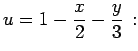
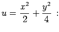
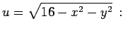

Inhalt Index DeskTop Bronstein

 Funktionen und ihre Darstellung Funktionen von mehreren Veränderlichen Definition und Darstellung Darstellungen
Funktionen und ihre Darstellung Funktionen von mehreren Veränderlichen Definition und Darstellung Darstellungen


Für die Darstellung einer Funktion zweier Veränderlicher u=f(x,y) sind zwei Varianten gebräuchlich:
Dazu wird der Funktionswert f(x,y) senkrecht über dem Punkt (x,y) des Definitionsbereiches abgetragen. Die Endpunkte dieser Strecken bilden eine Fläche im dreidimensionalen Raum.
| Beispiel A |
|
 Darstellung durch eine Ebene. |
| Beispiel B |
|
 Darstellung durch ein elliptisches Paraboloid. |
| Beispiel C |
|
 Darstellung durch eine Halbkugel mit dem Radius r=4. |
| Beispiel |
|
In den folgenden zwei Abbildungen sind die Höhenlinien konzentrische Kreise (nicht eingezeichnet). |
Hinweis: Funktionen mit Argumenten aus drei oder mehr Variablen können nicht mehr im dreidimensionalen Raum dargestellt werden. Ausgehend von der Fläche im dreidimensionalen Raum wird in Analogie dazu der Begriff der Hyperfläche im n-dimensionalen Raum gebraucht.